Рагнар
Рагна́р Лодбро́к (др.-сканд. Ragnarr Loðbrók) -
полулегендарный скандинавский конунг из рода Инглингов,
ключевой персонаж сериала.
Умелый воин и амбициозный вождь, Рагнар на протяжении
почти всей своей жизни следует пути викинга. Рассекая море
в поисках боевой славы и наживы, он стремится обрести
новые знания, открыть неизвестные земли и изменить
нелегкую судьбу своего народа, живущего в суровых условиях
Скандинавского полуострова
Флоки
Талантливый кораблестроитель и друг Рагнара Лодброка в
сериале является эксцентричным парнем, действия которого
порой могут казаться непредсказуемыми.
Основой для его образа послужил норвежский мореплаватель и
исследователь Флоки Вильгердарсон. Он имеет мало общего со
своим киношным «братом», но они оба считаются важными
персонами в истории Исландии. Флоки из «Викингов» открыл
этот вулканический остров, привез туда людей и сделал его
скандинавской колонией. Тогда как Вильгердарсон стал
первым норвежцем, побывавшим в Исландии, и именно он
прозвал эту землю Iceland — «Ледовая страна».
Хальвдан Черный
Младший брат и соратник Харальда Прекрасноволосого в
реальной жизни был его отцом и, конечно, не погибал от его
руки. В сериале «Викинги» Хальвдан Черный предстает очень
жестоким человеком, который получает удовольствие от
убийства врагов и другого насилия.
Он принимает участие в походе Рагнара Лодброка на Франкию,
где зверски убивает местных жителей и насилует женщин.
Однако много лет спустя, будучи союзником уже сына Рагнара
Бьерна Железнобокого, Хальвдан заметно смягчается и не
разделяет желания брата захватить Каттегат.
Лагерта
Первая супруга Рагнара Лодброка, северная воительница
Лагерта, несмотря на внешнюю хрупкость, могла тягаться с
мужчинами в боевом искусстве. Согласно девятой книге
«Деяний данов» летописца
В конце концов викинг добился ее расположения и женился на
ней, а затем у них появились трое детей. Этот брак
просуществовал ровно до того момента, пока Лодброк не
встретил Тору из Готланда.
Ролло
В сериале Ролло является старшим братом Рагнара Лодброка,
который живет в тени своего выдающегося родственника и
всеми силами пытается пробиться к славе, не чураясь
предательства.
Правителем Ролло (или Роллон) был мудрым. Он ввел строгие
законы и сформировал норманнскую идентичность, которая
отличала его народ от скандинавов и французов.
Аслауг
С принцессой Аслауг Рагнар Лодброк знакомится в Геталанде,
куда отправляется с дипломатической миссией по поручению
датского конунга (короля) Хорика. Вступив с викингом в
любовную связь, героиня быстро понимает, что забеременела
и отправляется в его родной Каттегат.
В сериале она становится второй супругой Рагнара, тогда
как в скандинавских источниках девушка была его третьей
женой после Торы из Готланда.
Бьерн Железнобокий
Полулегендарный шведский король был сыном королевы Аслауг
и Рагнара Лодброка (в «Викингах» его матерью является
Лагерта). В своих походах он достиг Гибралтара, разграбил
Марокко, доплыл до испанских Балеарских островов и
французского Прованса.
Бьерн считается первым правителем Швеции из Дома Мунсе,
который руководил страной больше 200 лет. В «Викингах»
Железнобокий представлен как образцовый воин, честный и
справедливый.
Ивар Бескостный
Один из сыновей Рагнара Лодброка и Аслауг считался самым
умным и яростным среди своих братьев. Он казнил короля
Нортумбрии Эллу II в отместку за убийство отца. Доподлинно
неизвестно, откуда пошло его прозвище.
Среди версий — исключительная гибкость, хромота и даже
импотенция (по некоторым источникам, у него не было
детей). В сериале «Викинги» Ивар страдает остеогенезом и
не может передвигаться самостоятельно, однако это с лихвой
компенсируется его интеллектуальными способностями.
 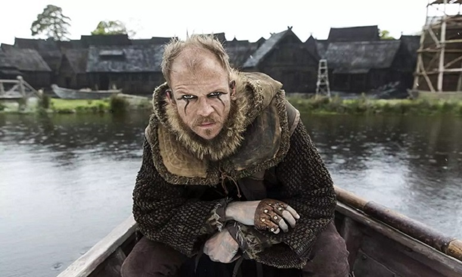
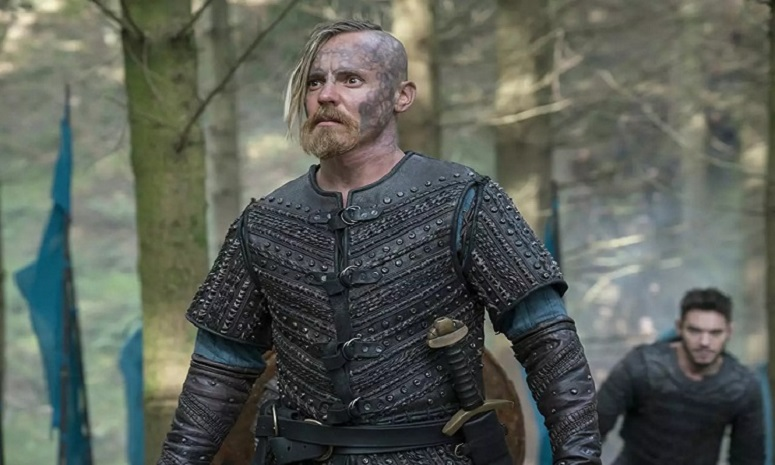
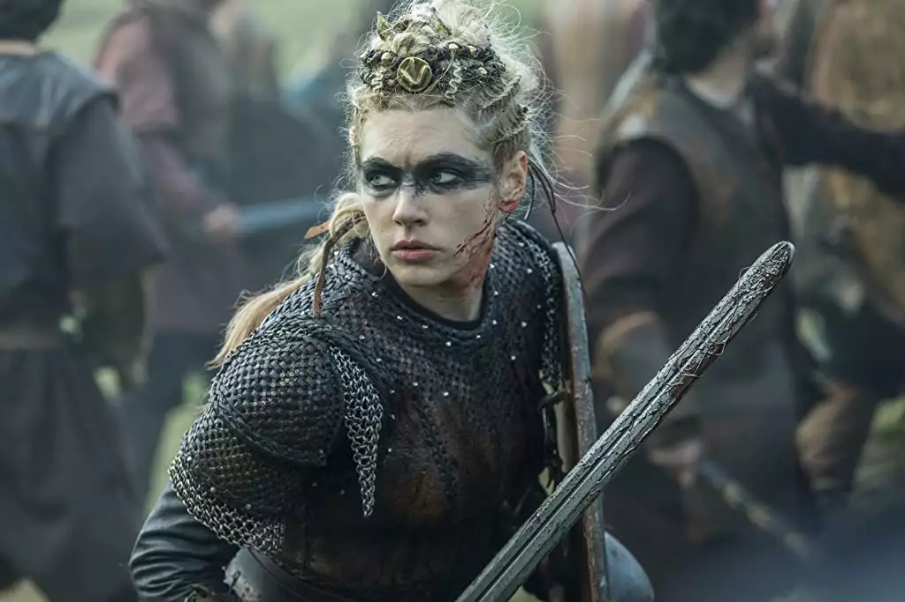
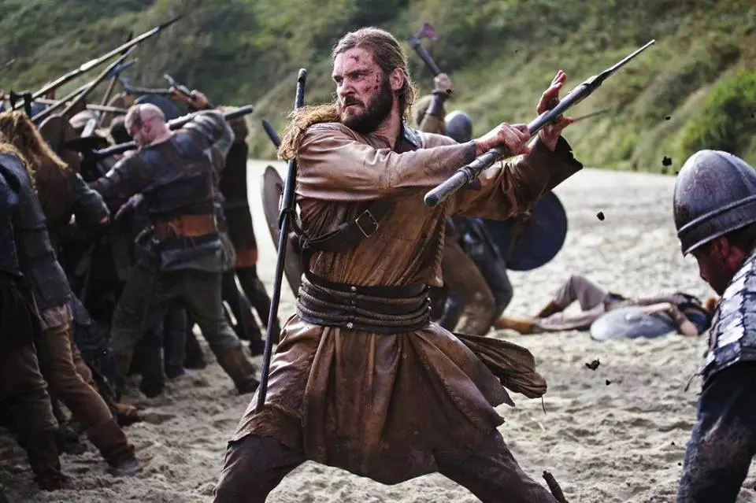
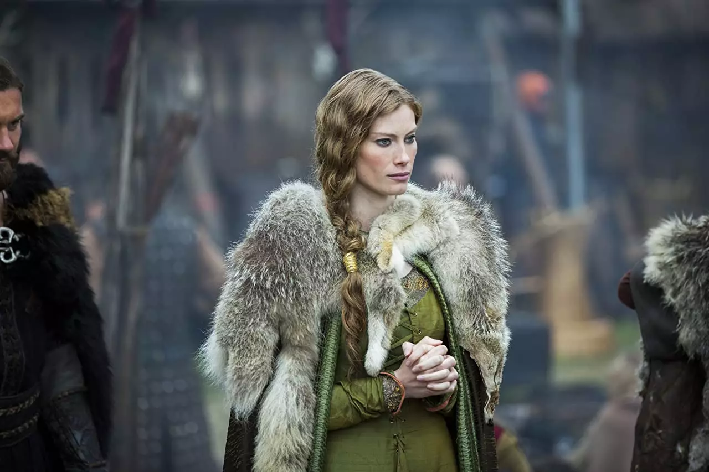
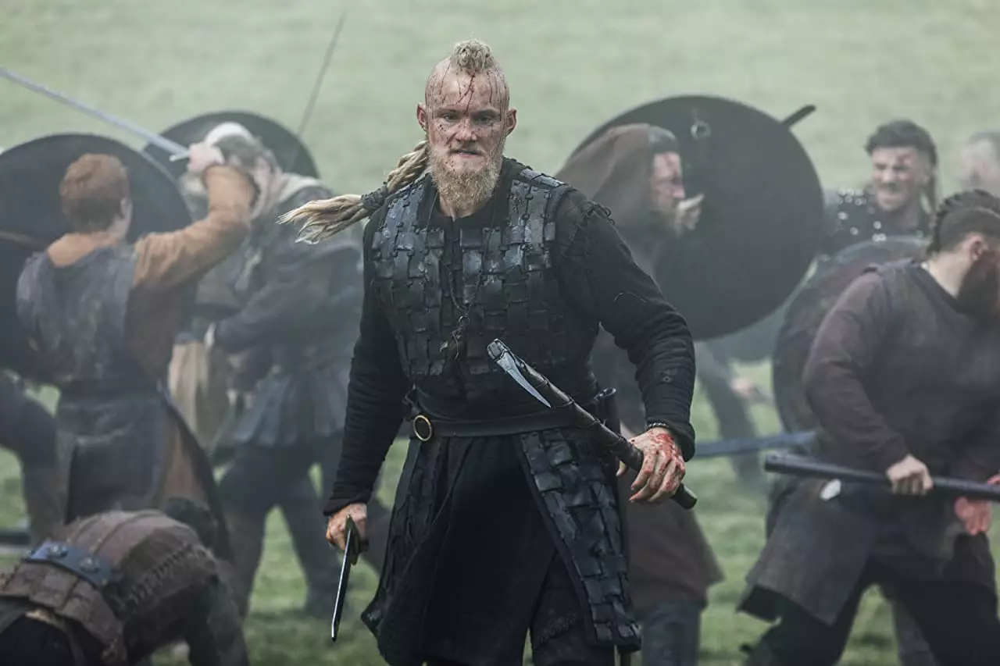
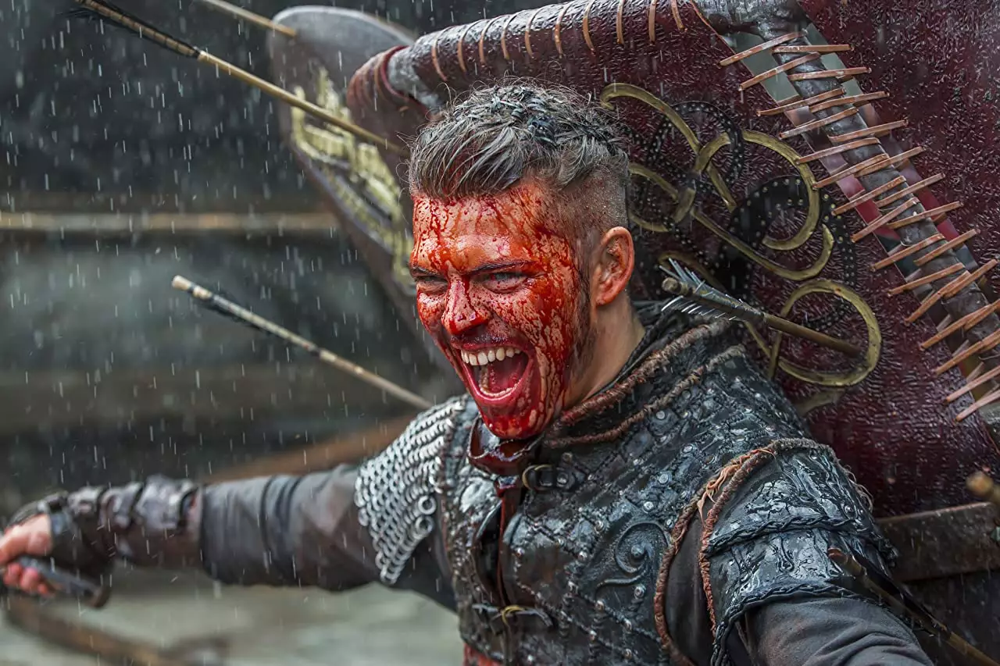
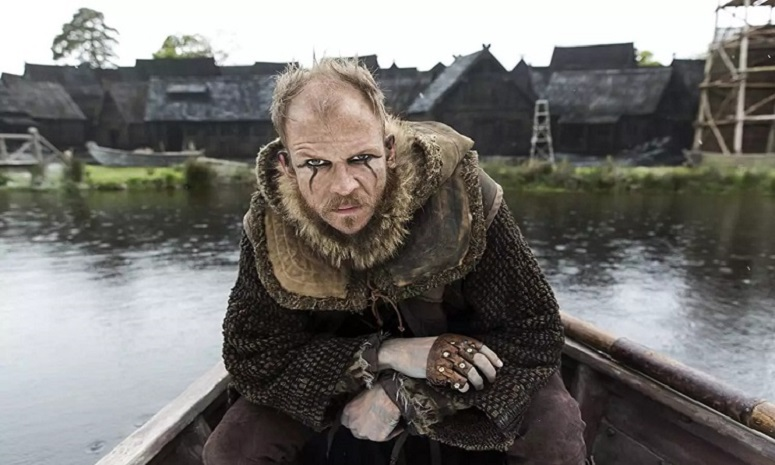
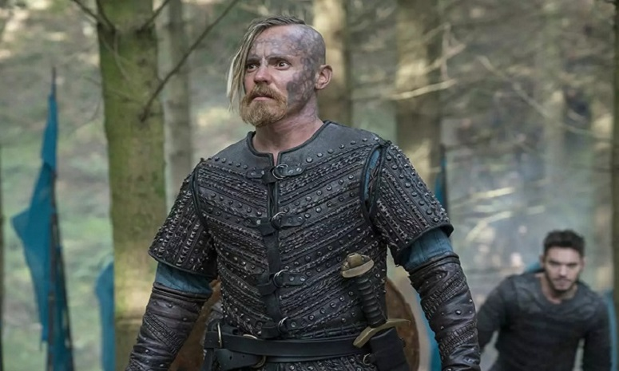
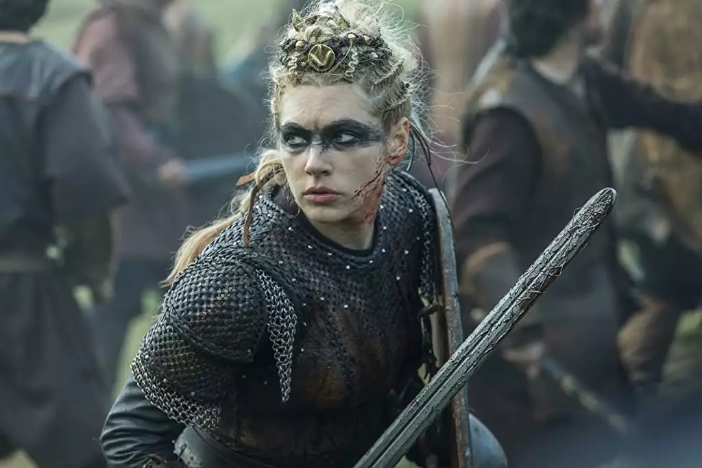
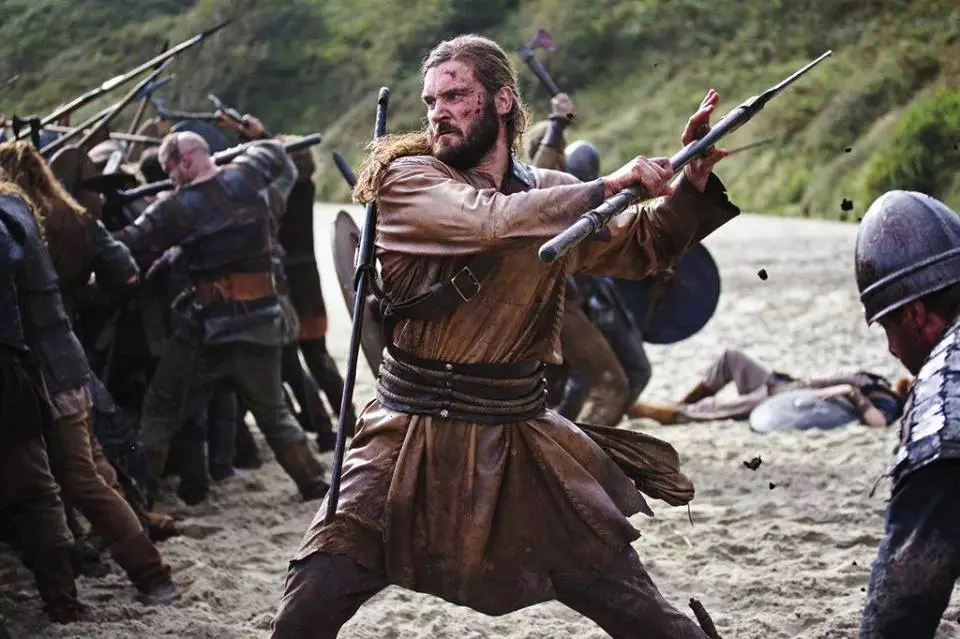
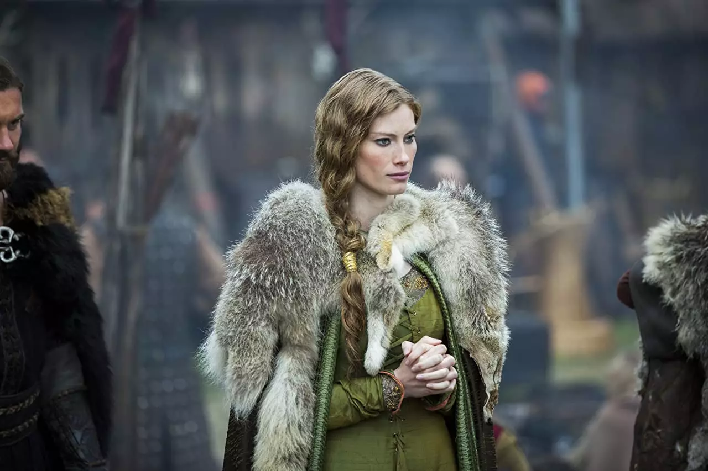
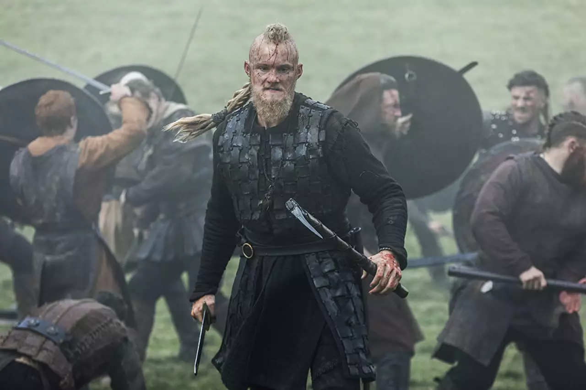
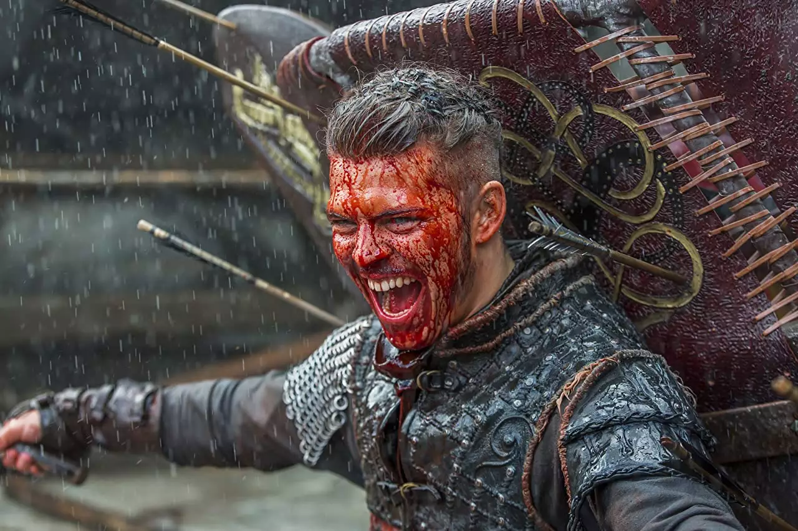